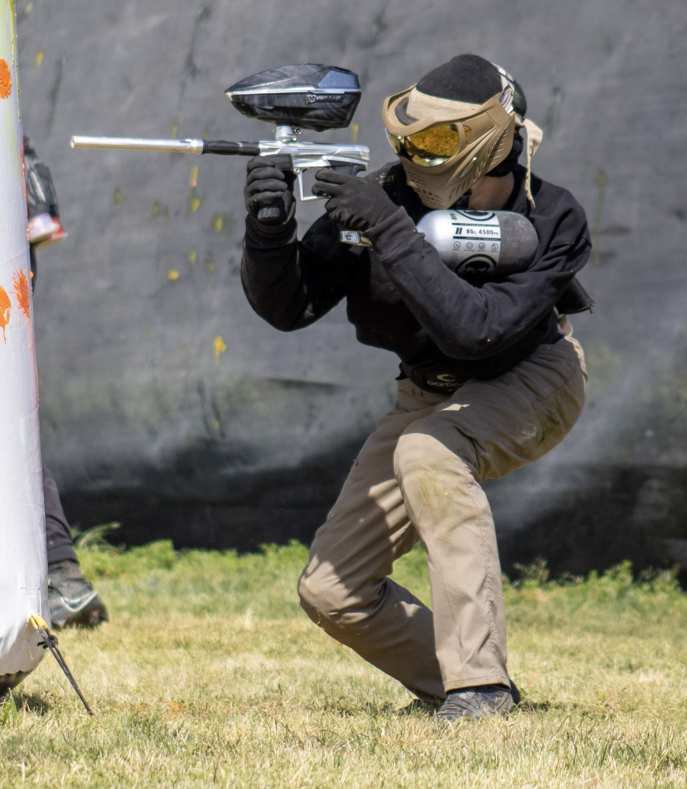

Currently, I am a student at Clovis East High School and The Center for Advanced Research and Technology (CART). I am enrolled in their Web Application Development class to help start my path to coding. I'm passionate about programming.

Some hobbies I have are hiking, video games, and paintball. The most recent hobby is paintball, I enjoy playing paintball because it is really fun and gets me out. I have always playe videos gaems ever since I was 8 years old. I like to play fps games like Apex Legend, Valorant, Overwacth, and more. I enjoy hiking because it gets me out and also it a great time to spend with my family.

After high school, I plan to go to college for computer science. I will first go to community college and transfer to a four-year college to get my bachelors. After I get my bachelors in computer science, I hope to get work toward my career job. I became interested in programming when I first saw my uncle work on his coding project for work. I saw that with code, one can create many cool things and sources for people to use. I also researched programming as a career and thought that the working environment and programming was really fun and a great job all around.
